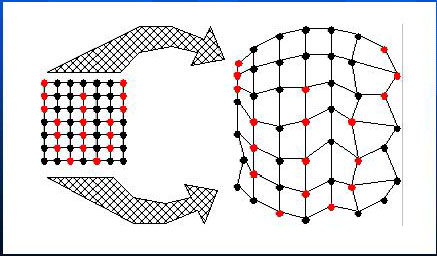
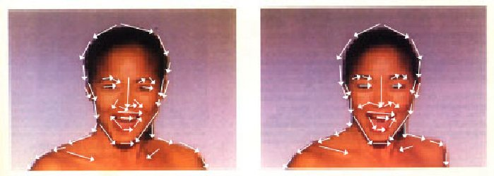

The mesh-warping algorithm relates features with nonuniform mesh in the source and destination images, i.e., the images are broken up into small regions that are mapped onto each other for the morph.

The algorithm accepts a source image, a destination image and two 2D arrays of coordinates. The first array, S, specifies the coordinates of control points in the source image. The second array, D, specifies their corresponding positions in the destination image. Both S and D must have the same dimensions in order to establish a one-to-one correspondence.
|
Source Image |
Destination Imge |
Figure2 Original Images for morphing
Figure3 Images with Control Points
Then two imges are processed through 2-pass warping with 2 output intermediate images I1 and I2. The first pass is responsible for resampling each row independently. It maps all initial image points coordinates (u, v) to their (x, v) coordinates in the intermediate image , thereby positioning each input point into its proper output column.The second pass then resamples each column in intermediate image, mapping every (x, v) point to its final (x, y) position in I1/I2. The 2D arrays in which the control points are stored to impose a topology to the mesh.
More detail is that each frame in the transformation uses an interpolated mesh M as the set of target positions for the input mesh points. M is computed by performing linear interpolation between respective points in S and D. The "warp" program actually plays an important role here since both I1 and I2 are each warped using M as the target mesh. Thus, I1 is warped using meshes S and M. In addition, I2 is warped using meshes D and M. Now that the landmarks of the source and target images are aligned, they are cross-dissolved to generate a morph frame. Catmull-Rom cubic spline is used to implement bicubic interpolation in [3] because it offers local control, although any spline wourld suffice.
Result:
Source code for Mesh-morphing: (Some changes are made to the image morphing source codes written by George Wolberg in order to morphing the color images).
Makefile: dependency rules for creating "warp" and "morph"
meshwarp.h: header file
warp.c: main function for "warp"
morph.c: main function for "morph"
meshwarp.c: workhorse mesh warping code
util.c: image I/O and memory allocation functions
catmullrom.c: Catmull-Rom cubic spline interpolation.
Pros and Cons:
|
|
The field morphing algorithm uses lines to relate features in the source image to features in the destination image. It is based upon fields of influence surrounding two-dimensional control primitives. It applies the reverse mapping as its ways of warping.
[ Note: There are 2 ways to warp an image. The first, called forward mapping, scans through the source image pixel by pixel, and copies them to teh apprpriate place in the destination image. The second, reverse mapping, goes through the destination image pixel by pixel, and samples the correct pixel from the source image. The most important feature of inverse mapping is that every pixel in the destination image gets set to something appropriate. In the forward mapping case, some pixels in the destination might not get painted, and would have to be interpolated.]
A pair of lines (one defined relative to the source image, the other defined relative to the destination image) defines a mapping from one image to the other.
where u is the position along the line, and v is the distance from the line |
The algorithms transforms each pixel coordinate by a rotation, translation, and/or a scale, thereby transforming the whole image.
Normally there are many features in images where transformation between multiple pairs of lines are applied. It specifies more complex transformations. A weighting of the coordinate transformations for each line is performed. The weight is determined by the distance from X to the line.
| where length is the length of a line, dist is the distance from the pixel to the line, and a, b, and p are constants that can be used to change the relative effect of the lines |
The multiple line algorithm is as follows:
For each pixel X in the destination
DSUM=0
weightsum = 0
For each line PiQi
calculate u, v based on PiQi
calculate X i based on u, v and P iQ i
calculate displacement Di=X i-Xi for this line
dist= shortest distance from X to PiQi
weight = (lengthP / (a + dist))b
DSUM += Di * weight
weightsum += weigth
X = X + DSUM / weightsum
destinationImage(X) = sourceImage(X)
Source Image |
Destination Image |
| Left figure is the first face distorted to the intermediate position without the grid or lines. | |
| Same as above figures with lines drawn over the faces. | |
| Left figure is the second face distorted to the intermediate position without the grid or lines. | |
|  | Same as above figures with lines drawn over the faces. |
| Left figure shows the morphed image (right figure) with the interpolated lines drawn over it. |
| The only positions that are used in the algorithm are ones the animator explicitly created. Everything that is specified is moved exactly as the animator wants them moved, and everything else is blended smoothly based on those positions. |
|